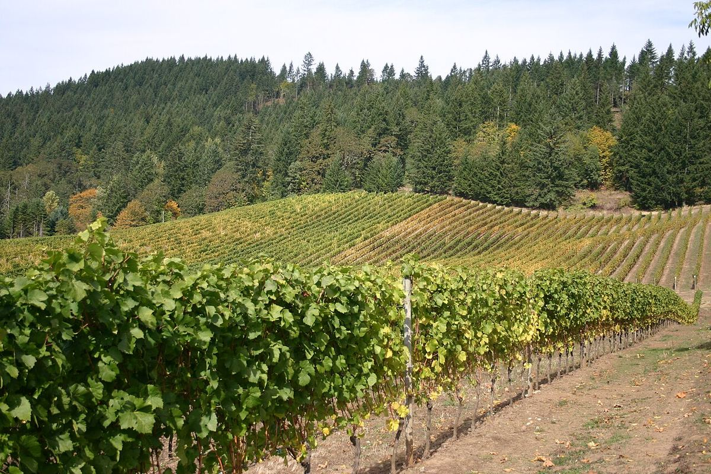

BLANC
Accueil › États-Unis › Willamette Valley
AVAWillamette Valley
Vallée du nord-ouest de l’Oregon, entre la chaîne côtière et les Cascades, devenue la grande référence américaine du pinot noir de climat frais.

Histoire
Bien que la vigne ait été cultivée dans l’Oregon dès le XIXe siècle, l’histoire moderne de la vallée de la Willamette commence au milieu des années 1960, lorsque David Lett, fondateur de The Eyrie Vineyards, planta du pinot noir et d’autres cépages dans les Dundee Hills, convaincu que le climat frais de la zone était comparable à celui de la Bourgogne. D’autres pionniers suivirent, comme Dick Erath et la famille Ponzi, qui créèrent de petites caves familiales. À la fin des années 1970, les pinots noirs de l’Oregon commencèrent à se faire remarquer lors de dégustations internationales et, en 1987, la maison bourguignonne Joseph Drouhin fonda Domaine Drouhin Oregon dans les Dundee Hills, un geste qui renforça la réputation de la région. La vallée fut reconnue comme AVA dans les années 1980 et compte aujourd’hui plusieurs centaines de caves, pour la plupart de taille moyenne ou petite.
Climat et sols
La vallée s’étire du nord au sud le long de la rivière Willamette, abritée du Pacifique par la chaîne côtière. Le climat est tempéré et frais, avec des hivers pluvieux et des étés secs et modérés ; la pluie au moment des vendanges est l’un des risques de l’année. Le Van Duzer Corridor, une brèche dans la chaîne côtière, laisse entrer des brises marines qui rafraîchissent les après-midi dans l’ouest de la vallée. Les sols ont trois grandes origines : volcaniques, de couleur rougeâtre, comme la série Jory typique des Dundee Hills et des Eola-Amity Hills ; sédimentaires d’origine marine, comme le Willakenzie, fréquent à Yamhill-Carlton ; et les dépôts de limons apportés par les inondations de Missoula à la fin de la dernière glaciation, dont le lœss de Laurelwood.
Sous-zones
De nombreuses sous-zones ont été délimitées au sein de l’AVA, parmi lesquelles Dundee Hills, Eola-Amity Hills, Yamhill-Carlton, Chehalem Mountains, Ribbon Ridge, McMinnville, Van Duzer Corridor, Tualatin Hills et Laurelwood District.
Styles et règles
Le pinot noir est le cépage dominant et donne des rouges aux fruits rouges, à l’acidité marquée et aux tanins fins, souvent comparés à ceux de Bourgogne. Le pinot gris est le blanc le plus planté et le chardonnay a gagné en prestige ces dernières années, tout comme les effervescents de méthode traditionnelle. L’Oregon applique des règles d’étiquetage plus strictes que les règles fédérales : pour la plupart des vins de cépage, il exige au moins 90 % du cépage indiqué.
Vins · Willamette Valley
ROUGE
Laurène Pinot Noir
Voir la fiche et où acheter ↗ROUGE
Pinot Noir Dundee Hills
Voir la fiche et où acheter ↗ROUGE
Original Vines Pinot Noir
Voir la fiche et où acheter ↗BLANC